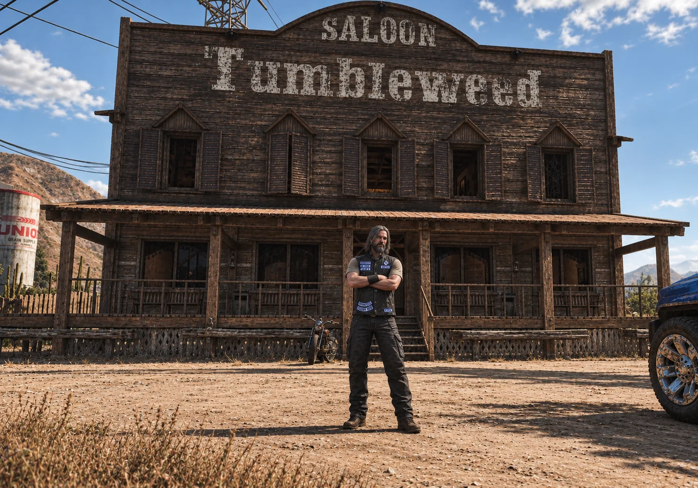
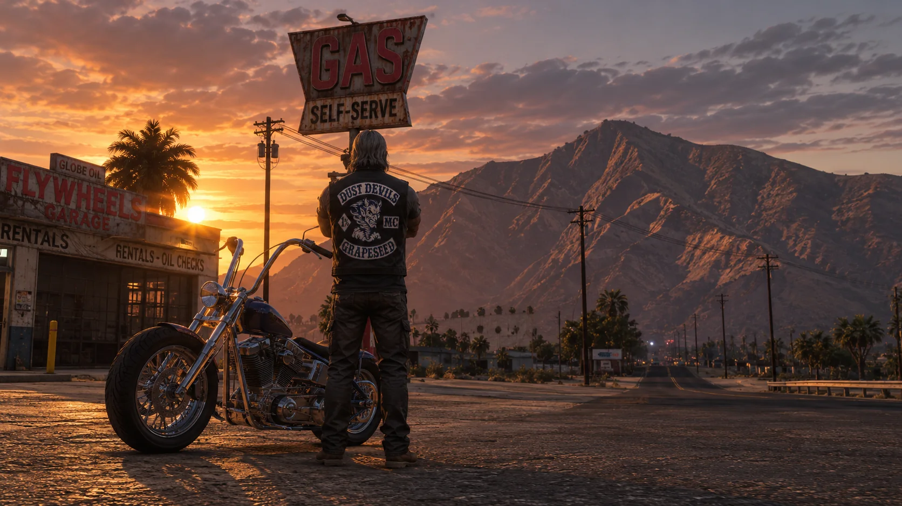

Tumbleweed
Le saloon d'Earl Cooper, à l'ancienne et sans excuses.

Son royaume
De retour de la guerre, Earl accepte le coup de main proposé par une vieille connaissance : le service, l'entretien du bar, puis les commandes, les stocks et les fournisseurs. Avec les années, il devient indispensable.
À la mort du propriétaire, il reprend l'établissement pour faire perdurer ce que son ami avait construit.
Le Tumbleweed est depuis un lieu de rencontre, un point de passage pour les membres du club et les habitués de la région.
Une bonne journée, selon Earl
- Un café noir
Servi au comptoir en bois, avant les premiers habitués.
- Un cigare
À portée de main, ou au coin des lèvres.
- Un whisky
Les bouteilles sont alignées derrière le bar.
Derrière le saloon
C'est là que Mike a appris la mécanique. Earl lui montrait comment démonter un moteur, régler un carburateur ou comprendre une panne juste au bruit, pendant que Marty racontait les Marines et les débuts du club.
Le dossier d'Earl